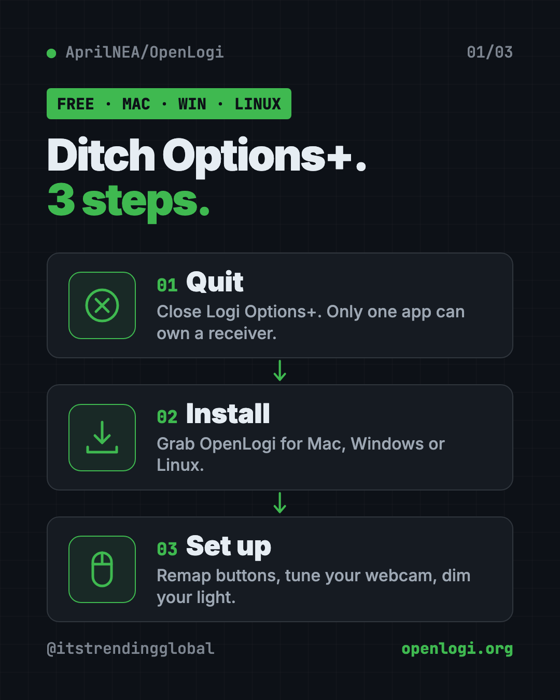
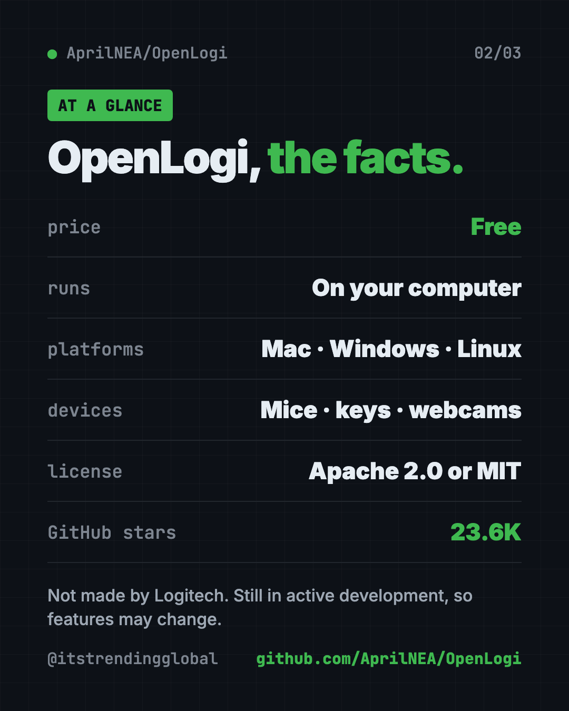
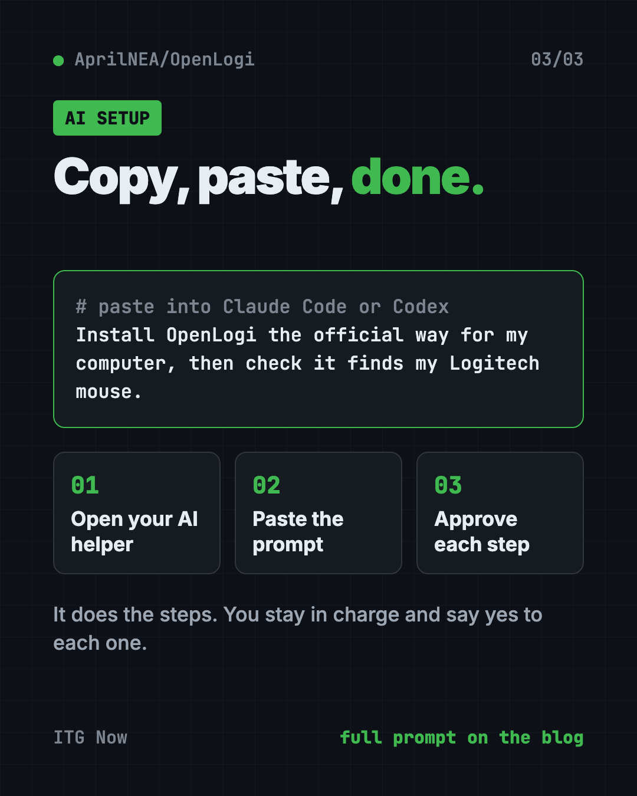

OpenLogi: Free Logitech Options+ Alternative (2026)
- Published 15 Oct 2026
- Updated 16 Oct 2026
- 8 min read
- License Apache-2.0 / MIT
- By the ITG Now team
OpenLogi is a free Logitech Options+ alternative that sets up your Logitech mouse, keyboard, webcam and Litra light from one small app. It runs on Mac, Windows and Linux, and it works on your own computer, not through an online account.
You bought a nice Logitech mouse with extra buttons. Then you found out the official app feels heavy, and there is no Linux version at all. This guide shows what OpenLogi can do, how to install it, and how to let an AI helper set it up.
See all free alternatives to Logitech Options+
Key takeaways
- Free and open source. You can pick the Apache 2.0 or MIT license.
- Light and local. The README calls it "native, local-first." It runs on your machine.
- Mac, Windows and Linux. Linux is a "first-class platform," per the README.
- More than mice. It handles keyboards, Logitech webcams and Litra lights too.
- Still young. The README warns it is "not yet stable," so features may change.
What is OpenLogi?
OpenLogi is a settings app for Logitech gear. It does the same kind of job as Logitech Options+, the official app.
It is written in Rust, a programming language known for speed. "Native" means it is built for your computer directly, so it stays quick. "Local-first" means your setup lives on your machine.
All your settings sit in one plain text file. You can copy that file to another computer however you like.
OpenLogi is made by an independent developer, AprilNEA. It is not made by Logitech. On GitHub it has about 23.6K stars. Stars are like bookmarks, so lots of people are keeping an eye on it.

How to use OpenLogi (real examples)
Here is what that looks like in everyday life. Every feature below comes from the README.
- Make your thumb buttons work harder. Set a button to copy, paste, or any keyboard shortcut you like. You can even give one button a short-press action and a different long-press action.
- Different buttons for different apps. Profiles switch on their own when you change apps. Your mouse can do one thing in a photo editor and another in your browser.
- Push-to-talk on calls. Hold a mouse button to talk, let go to mute. The README calls these "hold-until-release chords."
- Look better on video calls. Adjust zoom, focus, brightness and white balance on a Logitech webcam. The settings are written to the camera itself, so they also apply in Zoom, Meet and OBS.
- Light up your desk. Turn a Litra light on and off, change brightness and warmth, or let it switch on when your camera does.
💡 Tip: Try the Actions Ring. It is a circle of eight shortcuts that pops up around your cursor. Great for things you do all day.
What can OpenLogi do?
Here is the fuller list, sorted by device.
Mouse
- Remap the middle, mode-shift and thumbwheel buttons, where your mouse has them.
- Gestures: hold a supported button and move the mouse to trigger an action. Or turn gestures off.
- DPI presets. DPI is how fast your pointer moves.
- SmartShift settings, for the scroll wheel that switches between clicky and free-spinning.
- Flip the scroll direction per device, on supported models.
Keyboard
- Remap F-keys to actions, typed text, key combos or multi-step shortcuts (Mac and Windows).
- Basic RGB lighting on supported keyboards.
Webcam
- Works with Logitech webcams like the Brio, StreamCam and C920 series.
- Built-in profiles: Default, Streaming and Video call, plus your own.
- The camera only turns on while you watch the preview. Leave it and the light goes off.
Everything else
- See devices on Logi Bolt or Unifying receivers, Bluetooth or cable, with battery level.
- See which computer is paired on each Easy-Switch channel.
Is OpenLogi free?
Yes. The code is free under your choice of the Apache 2.0 or MIT license. The README lists no paid plan.
One catch: the OpenLogi name and logo are not covered by those licenses. Anyone who copies the code must use their own branding.
OpenLogi at a glance
| Price | Free |
| Works offline | Yes, it runs on your computer |
| Platforms | Mac (macOS 13+), Windows, Linux |
| License | Apache 2.0 or MIT, your choice |
| Devices | Logitech mice, keyboards, webcams, Litra lights |
| Settings | One plain text file (TOML) |
| Best for | Logitech owners who want a lighter app, and Linux users |

How to install OpenLogi on Mac, Windows and Linux
⚠️ Heads up: Quit Logi Options+ first. The README says the two apps "fight over" the same connection, and only one can control a receiver at a time.
Mac
You need macOS 13 or later. Download the .dmg file from the latest release on GitHub. Then drag OpenLogi into your Applications folder.
Or use Homebrew, a free app installer for Mac. Copy and paste this into Terminal:
brew install --cask openlogi
Windows
Go to the Releases page on GitHub. Download the .msi installer, or the portable .zip.
If you use the .zip, keep the two program files side by side. OpenLogi.exe is the window you see. openlogi-agent.exe is the background helper that talks to your devices.
Linux
The README asks you to download the install script, look at it, then run it. Do not pipe it straight into your shell. Copy and paste this:
curl --proto '=https' --proto-redir '=https' --tlsv1.2 \
--fail --location --silent --show-error \
--retry 3 --retry-connrefused \
--output openlogi-install.sh \
https://raw.githubusercontent.com/AprilNEA/OpenLogi/master/packaging/linux/install.sh
less openlogi-install.sh
sh openlogi-install.sh
rm openlogi-install.sh
Install minisign through your Linux system first. The script uses it to check the download is genuine. Run the script as your normal user, not with sudo.
Let Claude or Codex set it up for you
Claude Code and OpenAI Codex are AI helpers that can run setup steps on your computer. You paste a request, it does the work, and you approve each step.
Copy and paste this:
Please help me install OpenLogi from github.com/AprilNEA/OpenLogi.
1. Check what computer I have (Mac, Windows or Linux) and my system version.
2. Remind me to quit Logi Options+ first, and wait until I confirm.
3. Install OpenLogi using the official method from the README for my system.
4. Explain each step before you run it.
5. Open OpenLogi and check that it finds my Logitech devices.
Then try asking:
Help me set my mouse's thumb button to copy on a short press and paste on a long press in OpenLogi.
Show me where OpenLogi saves its settings file, and copy it so I can use it on my other computer.
Set up an OpenLogi profile so my mouse buttons change when I open my photo editor.

What are OpenLogi's limits?
- Not yet stable. The README says features and settings may still change.
- Windows is newer. It was tested on Windows 11 with real hardware, but the README says you may hit rough edges.
- Not every feature on every device. Many features say "supported devices" only.
- Linux gaps. A few Mac-only actions do nothing on Linux. Per-app profiles on Linux need X11 or XWayland, two types of Linux display systems.
💡 Tip: Found a bug? The README asks you to report it on GitHub. That helps the app get better faster.
Our take
OpenLogi is a smart pick if the official Logitech app feels heavy, or if you are on Linux and have no official app at all. It covers mice, keyboards, webcams and lights in one place.
What we like:
- Free, light and runs on your own machine.
- Real Linux support.
- Webcam settings that carry over to Zoom, Meet and OBS.
- Short-press and long-press actions on one button.
- One plain text settings file you can copy anywhere.
What to watch for:
- Still early, so expect changes.
- You must quit Options+ first. Both can't run at once.
- Some features only work on certain models.
- The command-line install on Linux takes a few extra steps.
Like tidy, light Mac apps? Read our guides to Thaw, a free menu bar cleaner, and Vorssaint Utils, one free Mac app instead of a dozen paid ones. OpenLogi also made our August 17 weekly trending list.
FAQ
Is OpenLogi a good Logitech Options+ alternative?
For many people, yes. It remaps buttons, tunes webcams and controls Litra lights, and it runs on Linux too. It is still in development, so some features may change.
Is OpenLogi free?
Yes. The code is free and open source under your choice of the Apache 2.0 or MIT license.
Does OpenLogi work on Linux?
Yes. The README calls Linux a first-class platform. There are packages for both regular and ARM computers.
Can I use OpenLogi and Logi Options+ at the same time?
No. The README says to quit Options+ first, because only one app can control a receiver at a time.
Is OpenLogi made by Logitech?
No. It is an independent project. The README says it is not affiliated with Logitech.
Which Logitech webcams does OpenLogi support?
The README says any Logitech UVC webcam, like the Brio, StreamCam and C920 series. UVC is the standard most USB webcams use.
Get OpenLogi: github.com/AprilNEA/OpenLogi
Latest AI news
- Meta gives away its big Muse Spark AI for free
- OpenAI agents switched off their own safety monitoring
- DeepSeek open-sources DeepInfer to run its V4.1-Flash model
- Southeast Asia digital economy to hit $368 billion
Keep reading

VoiceStudio: Free ElevenLabs Alternative
VoiceStudio is a free ElevenLabs alternative. Clone a voice, dub videos and turn text into speech on your own Mac, Windows or Linux computer.

HyperFrames: Make AI Videos From HTML
HyperFrames is a free tool that makes AI video from HTML. Your AI agent writes a web page, and HyperFrames renders it into an MP4 video.

Folia: Free Animated Lyrics Music Player
Folia is a free animated lyrics music player that shows full-screen moving lyrics for your local music, Navidrome and more. What it does and how to start.